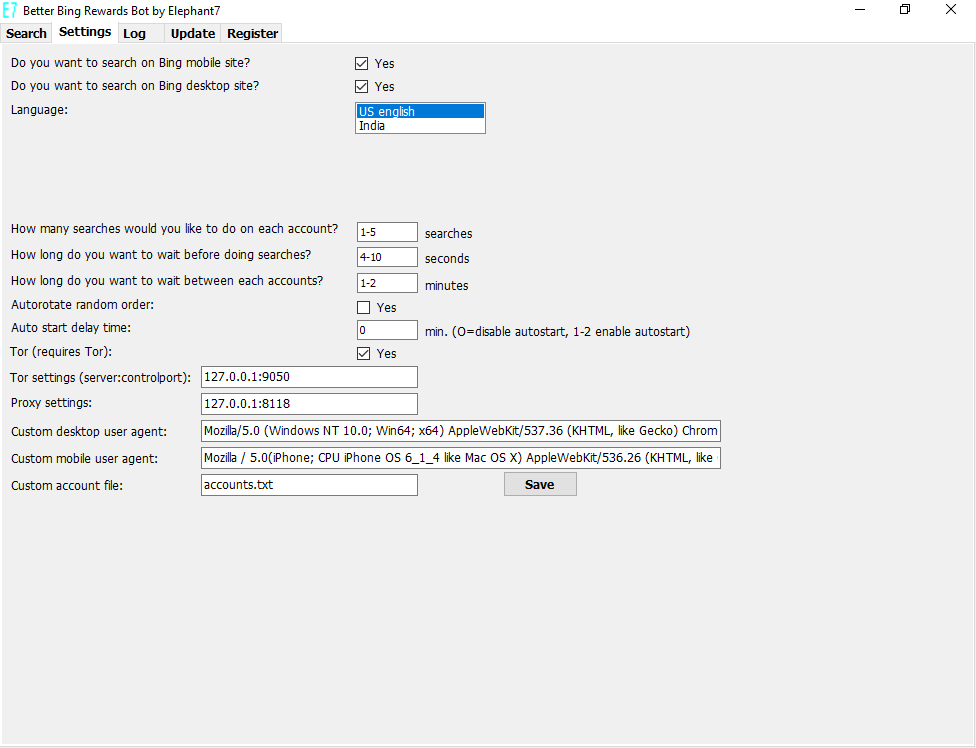

[If you have any question you can ask here, mirror 1 (a
Reddit profile is required!)]
Better Bing Rewards Bot
1. What is it and what does it do?
Better Bing Rewards Bot is the best professional automation script to earn Microsoft points while searching Bing.
1.2. Features
- Supports multiple accounts: Auto rotate through all accounts. A text file with the credentials is required.
- Supports auto and manual mode for auto and manual searches.
- Supports an individual wordlist. A text file is required.
- Supports multithreading (requires multiple Windows users).
- Supports Tor (Proxy settings and Identity switcher).
- Supports free Ip2location lite database (IP geolocation to force US IP and US country).
Download free database, Mirror 1!
- Supports individual searches in desktop and mobile version of Bing.
- Stealthier: The search engine switches between desktop and mobile version.
- Faster: Logs the earned Microsoft points.
- Stealthier: Random sleep delay: Set a random time delay "5-10" to wait between searches.
- Stealthier: Random searches count: Set a random number of searches "30-50" for searches.
- Stealthier: Random sleep between authentification "2-5" minutes to wait between accounts.
- Stealthier: In auto mode random order or sorted list of account.
- Stealthier: Simulate real user in all searches random click in searches.
- Supports auto start through a scheduled task.
- Shows earned Microsoft points for each searches.
- Faster: Stop searches when all points are earned.
- Maximize income: repeat searches until all points are earned (ignores searches count up to 2x)
- NEW! Maximize income: Dashboard tasks: earns daily dashboard tasks (not the quiz)!
- NEW! Stealthier: Custom Desktop & Mobile User Agent!
- NEW! Faster: Auto detect & select US language/market!
- NEW! Faster: Auto skip temporarily suspended accounts!
- NEW! Faster: Check earned Microsoft points!
- NEW! Stealthier: individual proxy settings for each account!
- NEW! Stealthier: New user authenticate with keystrokes!
- NEW! Log screen: Informations, settings and score!
- NEW! Faster searches, better authenticate, lower resources,
new features: random order and update, bugfixes.
- NEW! Custom Windows controls in setting tabs.
- NEW! Migrate old settings if any.
- NEW! Supports autostart with Windows task scheduler. - NEW! Supports Australia, France, Germany, U.K. - NEW! New version 0.40. Improved stealth and speed. - NEW! Update: bugfixes and stability. New function: detects LVL1 and LVL2 accounts!
1.2.1 BBRB video (searches), Mirror 1

1.2.2 BBRB video (Windows Internet connection setup), Mirror 1

1.2.3 BBRB video (Autostart), Mirror 1
1.2.4 Main tab (Searches)

Buttons: A=Manually authenticate, I=New identity, C=Clear cache
1.2.5 Settings tab

1.2.6 Logtab (shows earns points per account and used ip-addresses if used with tor)
In main screen navigate to log tab:

1.2.7 Update tab

2. Requirements
-Windows 10
-accounts.txt file
-words.txt file
-Microsoft Bing Rewards account
[If you have any question you can ask here, mirror 1 (a
Reddit profile is required!)]
3. [[IMPORTANT INFORMATION]]
3.1. Windows internet connection requires you to navigate to the settings tab and to unselect the Tor-checkbox and leave the tor settings and proxy
setting fields empty!
Example settings Windows internet connection:

3.3 FAQ
4. Installation
Download Better Bing Rewards Bot. Double-click bbrb.exe and edit settings to match your search. Download free location spoofing binary file from here:ip-country-region-city-latitude-longitude-zipcode-timezone, Mirror 1 to the main folder.
5. Tutorial
5.1 Create accounts.txt file to match your accounts.
New accounts are separated by newline. For instance user@mail.com/password.5.1.1 Custom proxies
- In accounts.txt file add the proxy separated by space after account: user@mail.com/pwd 127.0.0.1:8080
5.2 Create or edit words.txt file to match your searches.
New words are separated by newline. Words.txt file is required.5.3 Copy accounts.txt and words.txt file to the main folder of the program
5.4 Double-click the exe
5.5. Navigate to "Settings" tab and edit the default settings to match your searches.
5.5.1 The bot make use of:- 1. Windows internet connection (delete proxy settings and un-select Tor)
- 2. proxy settings
- 3. Tor
5.6. Start searches
5.4.1 If Autorotate is enabled go to "Search" tab and click the "Start" button
5.4.2 If Autorotate is disabled go to "Search" tab and select the account with + and - buttons and press A-button then press Start-button.
5.7. Browser url bar
5.7.1 The browser url bar supports special commands. Type the following commands:
5.7.2 "geolocation": Finds the users geolocation (navigate to iplocation.net)
5.7.3 "bingr": Navigate to Bing rewards homepage
5.7.4 "mobile": Change user agent to mobile bing version
5.7.5 "desktop:" Change user agent to desktop bing version
5.7.6 "bing": Navigate to Bing homepage version
5.7.7 "login": Navigate to Microsoft Live login
5.8 Autorotate
Better Bing rewards bot supports multiple accounts. Tick the checkbox to allow auto rotate between all accounts during the searches. In addition untick this when you want to start searches for a specific account.
5.9 Manual mode
The "-" and "+" button lets you specify an account and the "A"-button let you manually log into Bing rewards. Uncheck the "Autorotate" button and press the "Start" button to start a search with this account.
6. Troubleshooting
6.1 Windows may requires .net framework v4, Mirror 1 and vc redist 2015, Mirror 1
6.2 Delete all settings file in C:/User/Username/AppData/Local/E7 if the bot doesn't authenticate, doesn't earns Microsoft points, internet doesn't work.
6.3 If the bot doesn't start delete points.sqlite in the app folder.
6.4 Run the bot as adminstrator.
6.5 Send me a dump with process explorer.
6.6 Sent me event viewer application error details and summary.
6.7 Ask in reddit!
6.8 Make a video!
7. Changelog
03.09.2017 Update: bugfixes and stability. New function: detects LVL1 and LVL2 accounts!
21.08.2017 New version 0.40. Improved stealth and speed.
03.07.2017 Supports Australia, U.K., France, Germany (unsupport India)
20.05.2017 Bugfix minimize (toolbar threadsafe)
28.04.2017 Bugfix invalid cast exception
24.04.2017 Bugfix login
20.04.2017 Supports Australia
16.04.2017 Bugfix login and language settings
10.04.2017 Bugfix application settings and ip echo
02.04.2017 Update application settings
29.03.2017 Bugfix custom proxies
27.03.2017 Bugfix autorotate and autostart. Bugfix threadsafe textbox.
23.03.2017 Update dashboard
28.12.2016 Custom Windows controls in settings tab.
21.12.2016 Bugfix authenticate
14.12.2016 X-mas edition. Faster searches, better authenticate, lower resources, bugfixes, new features: random order and update, bugfixes.
24.11.2016 Bugfix Logtab
23.11.2016 Bugfix points.sql exception
22.11.2016 Bugfix skip suspended accounts
20.11.2016 Bugfix auto start/auto authenticate. New feature log tab.
04.11.2016 Bugfix authenticate
02.11.2016 Bugfix random number generator
26.10.2016 Bugfix Popup 2:max!
23.10.2016 Bugfix authentication
21.10.2016 Bugfix mobile searches continues and threadsafe toolstriplabel
19.10.2016 bugfix System.Convert
16.10.2016 fixed authenticate and autorotate!
12.10.2016 fixed search and MS points!
07.07.2016 Update ip2locaton lite database support!
25.06.2016 bugfix Windows internet connection
14.05.2016 bugfix auto-skip
18.03.2016 bugfixes, dashboard tasks, check earned Microsoft points, auto skip
10.02.2016 bugfixes, new custom desktop & mobile user agent
25.01.2016 fix autorotate, new dashboard tasks, fix errors
20.12.2015 fix bugs, fix autorotate, fix clear cache&cookies
12.12.2015 Initial release
[If you have any question you can ask here, mirror 1 (a Reddit profile is required!)]
8. Download
*Free version supports only 3 accounts, desktop searches and 2 regions.